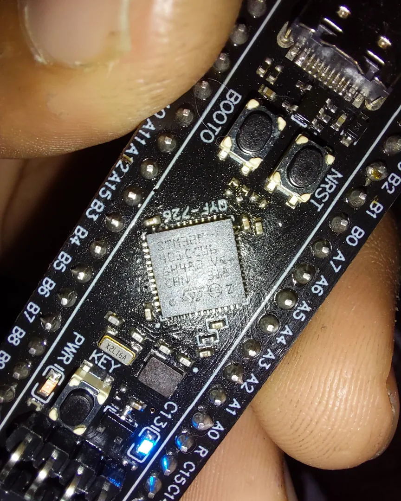
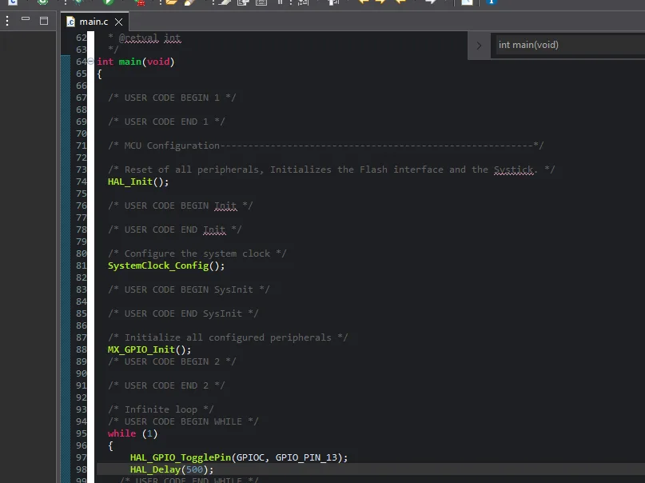
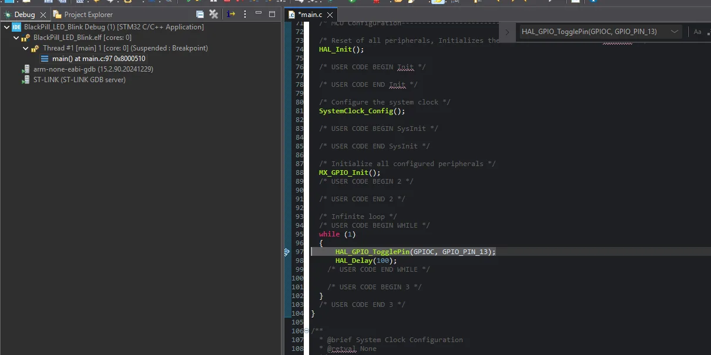
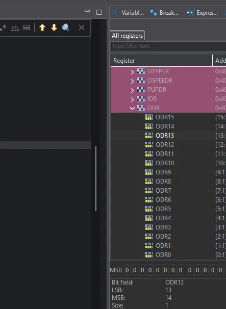
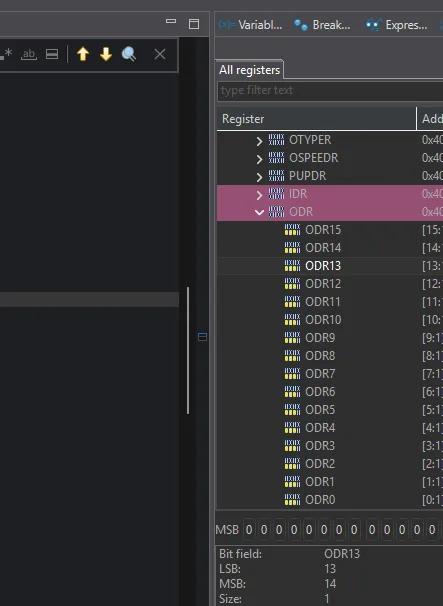

From a blinking LED
to reading silicon.
A hands-on STM32 Black Pill learning log, from the first ST-LINK connection to stepping through code and watching a hardware register change.

01 / THE QUESTION
What is actually happening inside the microcontroller?
The goal began simply: make the onboard blue LED blink. But once the firmware worked, the interesting part was no longer the LED. It was seeing a C statement turn into a change in bit 13 of a real peripheral register.
02 / THE BUILD LOG
Seven steps from blank project to working hardware.
A complete record of what worked, including the mistakes that taught us something.
- 01CONNECTED ✓
Wire the programmer
ST-LINK V2 through SWDIO, SWCLK and common GND, with an appropriate target-voltage reference.
- 02CONFIGURED ✓
Configure the MCU
STM32CubeMX: PC13 as push-pull GPIO output, initial HIGH; SYS Debug set to Serial Wire.
- 03GENERATED ✓
Generate the HAL project
Project
BlackPill_LED_Blink, generated for STM32CubeIDE with startup and driver files. - 04CORRECTED ✓
Write the application loop
Two lines in
main(): toggle PC13, then delay. We corrected an initial placement insideError_Handler(). - 05BUILT ✓
Compile the firmware
STM32CubeIDE compiled the corrected source with 0 errors and 0 warnings.
- 06VERIFIED ✓
Flash and run
ST-LINK reported
Download verified successfully. The onboard LED blinked as expected. - 07OBSERVED ✓
Halt and inspect
Breakpoint at
main.c:97. Step Over moved execution to line 98 and changed GPIOC ODR13.
Identification note: The working project selected STM32F401CCUx. ST-LINK detected the STM32F401xB/C family but previously reported 128 KB flash; the exact package marking and available flash still require verification.
03 / THE FIRMWARE
Two lines.
Real hardware.
This was the complete application logic inside the CubeMX-generated while(1). The HAL and GPIO setup were generated separately.
/* USER CODE BEGIN WHILE */
while (1)
{
HAL_GPIO_TogglePin(GPIOC, GPIO_PIN_13);
HAL_Delay(100);
/* USER CODE END WHILE */
/* USER CODE BEGIN 3 */
}
/* USER CODE END 3 */Initial half-period
1 blink / second
Updated half-period
5 blinks / second

04 / DEBUGGING
Stop the processor.
See the system.
A breakpoint at main.c:97 halted the Cortex-M4 just before toggling PC13. The LED stopped blinking because the CPU stopped running the application.

05 / THE HARDWARE REGISTER
One bit changed.
We watched it happen.
In the debugger's SFR view, GPIOC ODR changed from 0x00000000 to 0x00002000 after the toggle operation was stepped over.
GPIOC / ODR
Memory-mapped address 0x40020814
This is an interactive illustration of the observed register states, not a live connection to your microcontroller. Other bits are held at zero for clarity.


How one bit becomes a physical output
Bit 13 of the GPIOC output latch controls PC13. On this active-low LED circuit, 0 turns the LED on and 1 turns it off. The HAL toggle uses GPIO peripheral register operations; the resulting output state is visible in ODR.
LSB and MSB: bit 0 is the least significant bit of the word, and bit 31 is the most significant position in a 32-bit value. The ODR register's bits 16–31 are reserved. The selected ODR13 field itself contains one bit.
06 / BENCH REFERENCE
The connections and registers worth keeping.
SWD programming connections
| ST-LINK V2 | Black Pill |
|---|---|
| SWDIO | PA13 / SWDIO |
| SWCLK | PA14 / SWCLK |
| GND | GND |
| 3.3 V / VTref | 3V3 as applicable* |
* Verify your programmer's voltage reference versus power output before wiring; do not directly tie two independent power outputs together.
GPIOC register map
| Register | Address |
|---|---|
| MODER | 0x40020800 |
| IDR | 0x40020810 |
| ODR | 0x40020814 |
| BSRR | 0x40020818 |
BSRR supports atomic bit set/reset operations; ODR reports the output latch state.